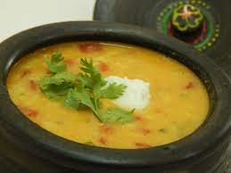

Gujarati Kadhi

Description
Kadhi is a Gujarati dish. It is usually served with khichadi, rotli, parantha and rice. It is considered as a light food.
Ingredients
- 1 cup Beaten Fresh Curds
- 1 tablespoon Bengal Gram Flour
- 1/2 teaspoon Chilli-Ginger Paste
- Few Curry Leaves (Kadhi Patta)
- 1 tablespoon Sugar or Jaggery
- Salt to Taste
- ¼ teaspoon Cumin Seeds
- ¼ teaspoon Fenugreek Seeds (Methi)
- 1 tablespoon Ghee or Oil
- 1 tablespoon Chopped Green Coriander
Steps
- Mix the Bengal gram flour and curds till the mixture is smooth
- Heat ghee/oil in a saucepan
- Fry the cumin and fenugreek seeds till they crackle
- Add the curry leave and chilli-ginger paste and stir properly
- Add the curs-flour mixture
- Add 1 cup of water, salt and sugar/jaggery
- Mix and boil
- After it comes to a boil, lower the flame and allow to simmer for a few minutes, stirring continuously
- Garnish with coriander and serve while hot